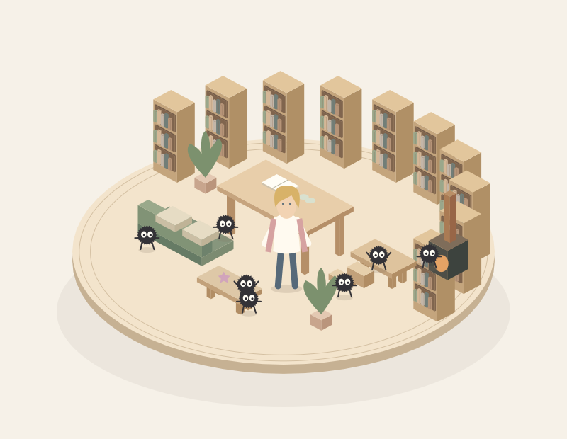
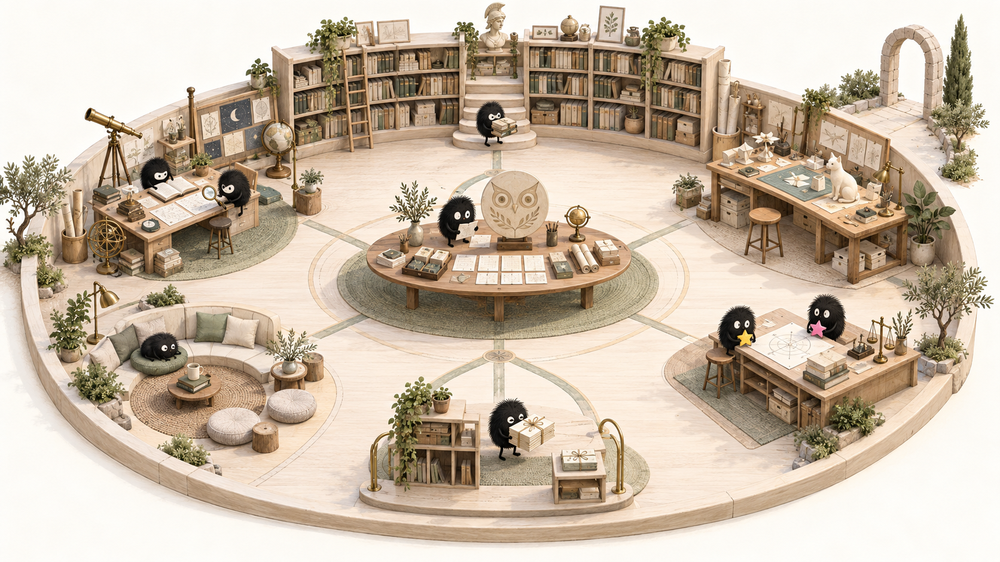
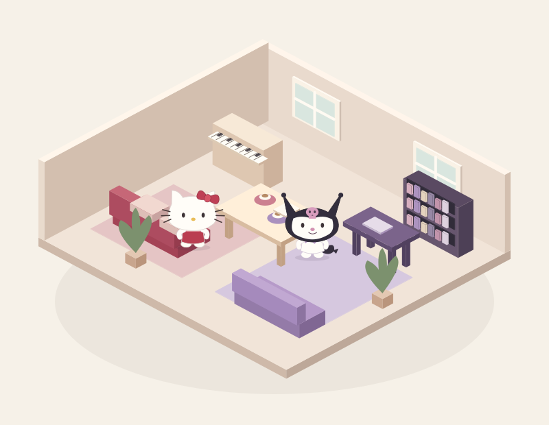
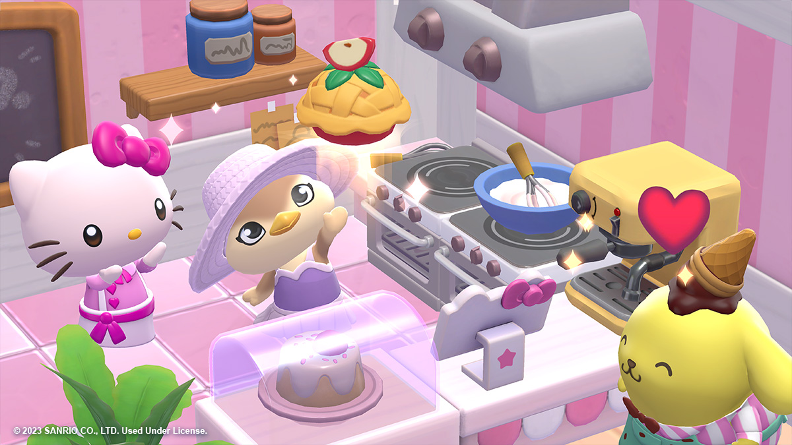
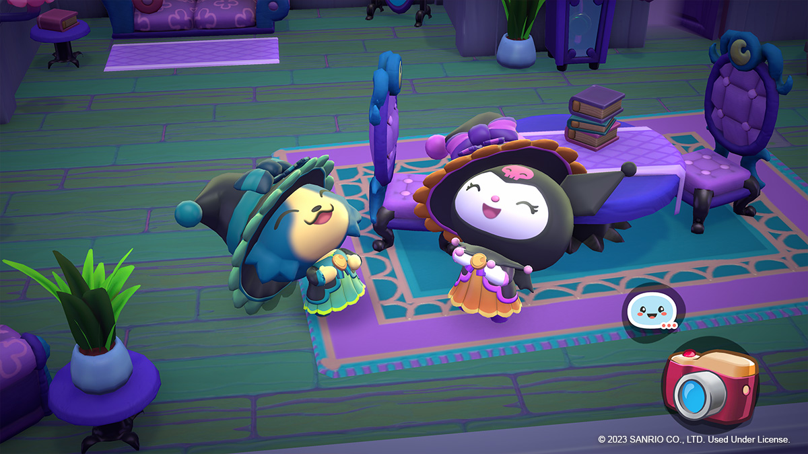
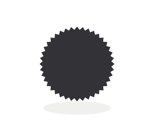
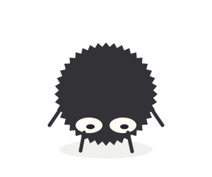
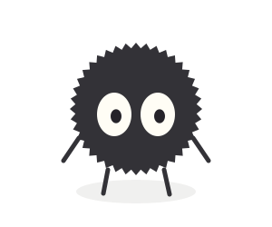

TWO WORLDS · DESIGN STUDY 05
두 세계,
서로 다른 하루.
하울과 스스와타리의 햇빛 드는 공방.
헬로키티와 쿠로미의 취향이 만나는 집.
표정부터 걸음, 빛과 가구까지 다시 설계합니다.
설계 검토용 · 실제 3D 제작 전01 / TWO PLACES TO LIVE
같은 시점으로 보는,
두 세계의 분위기.
두 그림은 같은 투영으로 직접 그린 공간 설계도입니다. 구조가 보이는 사선과 시작 각도의 후보인 수직 탑뷰를 바꿔 볼 수 있습니다. 탑뷰에서 시작하는 방향은 유지하며, 정확한 첫 각도는 비교 후 정합니다.

지브리 공간 제안 · 사선 설계도, 실제 3D 화면은 아닙니다.WORLD A
햇빛 드는 마법 공방
하울의 큰 작업대 아래로 작은 스스와타리가 오갑니다. 밝은 원형 공간에 책·찻잔·별사탕과 작은 보일러 구석을 더합니다.
- 공간
- 원형 동선 · 반원 책장 · 큰 작업대와 바닥 가까운 먼지 생활 자리
- 재질
- 옅은 참나무 · 종이 · 천 · 작은 구리와 철
- 빛
- 넓은 따뜻한 창빛. 주황빛은 보일러 구석에만 작게 둡니다.
이어가는 분위기 기준 보기

기존 V0.2 참고 이미지. 원형 바닥·여백·옅은 목재를 이어갑니다. 하울과 새 스스와타리 설계는 위의 새 제안입니다.
산리오 공간 제안 · 지브리와 같은 투영으로 그린 설계도입니다.WORLD B
서로의 취향이 만나는 집
키티의 다정한 살롱과 쿠로미의 개성 있는 서재가 연결됩니다. 중앙 테이블에서 함께 만들고 쉬는 하나의 집입니다.
- 공간
- 연결된 두 생활 구역 · 공동 테이블 · 키티의 건반과 쿠로미의 책장
- 재질
- 무광 도장 목재 · 짧은 직물 · 도자기 · 작은 유리 면
- 빛
- 두 구역을 잇는 따뜻한 창빛. 쿠로미 쪽에도 밝기를 충분히 둡니다.
- 색
- 크림 · 체리 레드 / 차콜 · 라일락 · 로즈
공식 3D 표현 참고 보기

키티 · 입 없는 얼굴, 둥근 부피와 손짓.
쿠로미 · 눈과 입, 후드 실루엣이 함께 표현됩니다.Hello Kitty Island Adventure 공식 이미지 · 위 새 공간과 구분되는 참고 자료입니다.
첫 각도에서 눈이 얼마나 보일까
수직 90°와 높은 사선 60°는 시작 각도의 비교 후보입니다. 가까운 사선은 확대 후 보는 거리입니다. 아래는 가독성 설명도이며 실제 모델의 각도별 렌더가 아닙니다.

수직 90°배치는 잘 보이고, 얼굴은 가려집니다.
높은 사선 60°눈이 일부 보이고, 옆면도 남습니다.
가까운 사선확대 후 표정과 몸짓을 봅니다.스스와타리는 검은 구형 몸·불규칙한 가는 윤곽·흰 눈·가는 두 팔과 두 다리로 되돌립니다. 작게 쉬는 자세에서는 팔다리를 몸 가까이 접습니다. 색과 가구 배치는 두 세계를 위한 새 제안입니다.
02 / FACES & GESTURES
눈에서 몸짓까지,
저마다 다른 표정.
스스와타리는 눈동자와 가는 팔다리, 키티는 입 없이 눈과 손, 쿠로미는 눈·입·꼬리로 감정을 표현합니다. 하울은 섬세한 얼굴과 자연스러운 몸짓을 이어갑니다.
캐릭터와 감정을 눌러 연기 제안을 비교하세요. 정지된 콘셉트이며 실제 3D 변형·동작 검증은 다음 단계입니다.
둥근 흰 눈과 가는 팔다리, 몸의 기울기로.
스스와타리 · 기본
관심 대상에 동공을 맞추고, 팔을 편안하게 내립니다. 늘 같은 방향을 바라보지 않습니다.
기본 형태는 공식 자료를 참고했습니다. 감정별 자세와 눈 변형은 이번 설계의 연기 제안입니다.
감정은 업무 상태와 분리합니다. 사용자의 무응답·취소에 화남이나 슬픔을 연결하지 않습니다. 실패는 작업물에 표시하고, 캐릭터는 잠깐 살펴본 다음 다시 시도합니다.
03 / EVERYDAY LIFE
일하는 사이,
저마다의 작은 생활.
같은 동작을 모든 캐릭터에 붙이지 않습니다. 지브리는 크기 차이와 각자의 작은 일, 산리오는 두 친구의 다른 리듬을 살립니다. 아래는 움직임의 설계이며 재생 영상은 아닙니다.
이동
지브리하울은 자연스러운 보폭. 스스와타리는 짧은 걸음으로 가다가 관심 대상에 모였다가 흩어집니다.
산리오키티는 일정한 작은 걸음. 쿠로미는 조금 빠르게 걷고 방향을 바꿀 때 짧은 탄력을 줍니다.
운반
지브리하울이 문서를 건네면 먼지가 작은 물건을 머리 위나 품에 모아 듭니다.
산리오키티는 상자를 두 손으로 안정적으로 전달. 쿠로미는 한 번 살펴보고 자신 있게 내밉니다.
읽기
지브리하울은 책장을 넘기고, 먼지는 큰 책 옆에서 몸을 기울여 글을 따라갑니다.
산리오키티는 쿠션에 앉아 책을 봅니다. 쿠로미는 소파에 기대 연애소설을 읽습니다.
만들기
지브리하울은 손에 든 물건을 돌려 봅니다. 먼지들은 작은 발판에서 각자 다른 손동작으로 함께 작업합니다.
산리오키티는 리본과 상자를 가지런히. 쿠로미는 노트와 스티커를 펼쳐 다른 아이디어를 시도합니다.
확인
지브리하울은 시선→고개→몸 순서로 돌아봅니다. 먼지 둘은 두 자료를 번갈아 살펴봅니다.
산리오키티는 가까이 다가가 세부를 봅니다. 쿠로미는 한 발 뒤에서 전체를 확인합니다.
교류
지브리먼지 하나가 발견한 것을 옆 친구에게 보여주면, 서로 다른 타이밍에 고개를 돌립니다.
산리오키티는 손을 흔들며 옆자리를 권합니다. 쿠로미는 짧은 손짓과 장난스러운 윙크로 부릅니다.
쉬기
지브리하울은 차를 마시고 머리카락을 정돈합니다. 먼지는 벽 아래 작은 자리에 앉아 별사탕을 살펴봅니다.
산리오키티는 찻잔을 두 손으로 잡습니다. 쿠로미는 소파에 기대 작은 발을 흔듭니다.
마무리
지브리하울의 조용한 미소. 먼지들은 결과물을 올려 들고 옆 개체를 돌아봅니다.
산리오키티가 완성한 상자를 전달합니다. 쿠로미는 만족스럽게 끄덕인 뒤 함께 결과를 봅니다.
한 번에 1–2명만 눈에 띄게 움직이고, 나머지는 잠깐 쉽니다. 모든 캐릭터가 동시에 들썩이는 반복은 줄입니다. 움직임의 크기와 타이밍은 후속 시험에서 정합니다.
04 / TOP VIEW, REAL DEPTH
위에서 시작해,
눈을 맞추는 거리로.
탑뷰는 시작 위치입니다. 첫 각도는 위 비교로 정하고, 실제 3D에서 확대하며 시점을 낮춰 얼굴을 봅니다. 부피·높이·빛·가림이 입체감을 만들며, 수직으로 볼 때는 가구 옆면이 보이지 않는 한계도 함께 봅니다.
천장 없이, 위에서 시작
수직 탑뷰에서는 얼굴보다 위치·몸짓·작업물을 읽습니다. 작은 먼지를 크게 키우지 않고, 선택해서 가까이 볼 수 있게 합니다.
시점 계획 도식 · 실제 조작 가능한 3D 화면이 아닙니다.
바닥에 붙어 있는 느낌발 디딤·가구 다리·접촉 그림자를 맞춥니다. 캐릭터가 방 위에 떠 있는 스티커처럼 보이지 않게 합니다.
높이가 다른 물건책장·책상·바닥 선반의 높이 차이와 서로 가리는 관계를 살립니다. 공간 도형과 인물 모두 입체로 만듭니다.
회전해도 보이는 얼굴가까운 벽은 시야를 가리지 않게 처리하고, 정면·옆면에서도 같은 얼굴이 유지되는지 확인합니다.
편안한 복귀자동 회전은 기본으로 넣지 않습니다. 전체 보기로 탑뷰에 돌아가고, 움직임을 줄일 수 있게 합니다.
수직 탑뷰에서 작은 얼굴 표정을 모두 읽기는 어렵습니다. 탑뷰에서 시작해 가까이 볼 때 감정을 자세히 읽는 안을 추천합니다. 수직 90°는 현재 비교 후보이며 확정값이 아닙니다. 넓게 보는 동안에도 얼굴이 중요하면 높은 사선 60° 후보를 검토합니다.
05 / AFTER THE DESIGN REVIEW
설계 검토 다음,
작은 장면에서 시작.
먼저 두 공간의 분위기, 캐릭터의 기본 모습, 표정 강도를 봅니다. 방향이 맞으면 같은 기준으로 공간과 얼굴의 거리를 함께 시험합니다.
지금 · 설계 검토두 세계의 성격원형 마법 공방과 두 친구의 집. 스스와타리의 형태, 입 없는 키티의 표정, 쿠로미의 장난스러움이 맞는지 봅니다.
검토 뒤 · 첫 장면공간과 얼굴의 거리가구 일부만 있는 작은 방에서 탑뷰→확대→회전을 시험합니다. 작은 먼지 크기, 얼굴 가독성, 벽 가림을 함께 봅니다.
그다음 · 생활 연결표정에서 일상으로기본 표정이 정면·사선·측면에서 안정되면 걷기·운반·독서·휴식으로 넓힙니다. 업무 상태와 감정 반응을 따로 연결합니다.
이번에는 설계안까지 준비했습니다. 실제 3D 모델·얼굴 변형·연속 움직임·모바일 성능은 아직 검증하지 않았습니다.
REFERENCE NOTES
원작에서 확인한 것,
새롭게 제안한 것.
공식 스틸·공식 캐릭터 소개·실제 공간 사진·공식 3D 게임 이미지를 참고했습니다. 감정 여섯 가지와 생활 동작의 타이밍, 가구·색 배치는 이번 설계의 제안입니다.
{kind=link}
{kind=link}